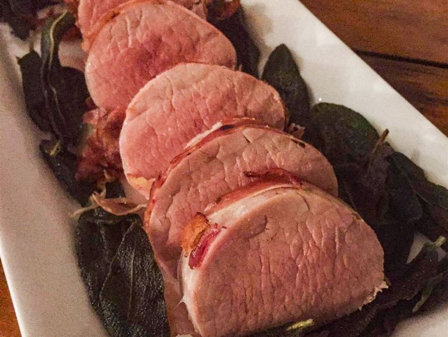

Prosciutto-Wrapped Pork Tenderloin with Crispy Sage

Description
Ingredients
- 1 pound pork tenderloin
- salt and ground black pepper to taste
- 1 bunch fresh sage, leaves removed and stems discarded, divided
- 6 ounces prosciutto
- 1 tablespoon olive oil, or more as needed
Steps
- Preheat oven to 350 degrees F (175 degrees C).
- Lightly season pork with salt and black pepper. Arrange about 6 sage leaves over tenderloin. Wrap prosciutto around tenderloin and sage, overlapping prosciutto slightly; wrap in plastic wrap and refrigerate to allow prosciutto to set on pork tenderloin, 5 to 10 minutes. Remove plastic wrap.
- Heat olive oil in a skillet over medium heat. Fry wrapped tenderloin in the hot oil until prosciutto is crispy and lightly browned on all sides, 8 to 10 minutes. Transfer wrapped tenderloin to a baking dish, reserving oil in the skillet.
- Bake tenderloin in the preheated oven until pork is cooked through, about 20 minutes. An instant-read thermometer inserted into the center should read at least 145 degrees F (63 degrees C).
- Heat reserved oil in the skillet over medium heat; fry remaining sage leaves until crispy, adding more oil as needed, about 5 minutes.
- Slice tenderloin and serve with crispy sage leaves.